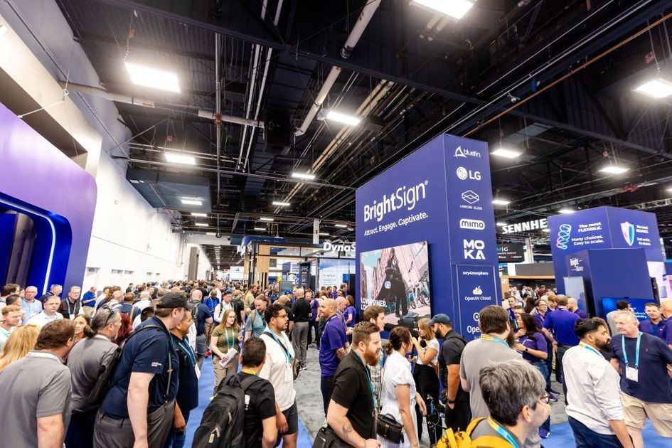

Conferences · Tech
InfoComm 2027
- Dates
- –
- Venue
- Orange County Convention Center (West building)
- Location
- Orlando, United States
- Format
- In-person
- Category
- Tech
- Industry
- Pro AV / technology
- Organiser
- AVIXA
- Expected attendance
- 30,000
- Official website
- https://www.infocommshow.org/
About
Education 12-18 June; exhibits 16-18 June. US dates are local to the host city.
Topics: audiovisual, AI, collaboration tech.
Official site: 'an audience of 30,000+ pro AV professionals'; the most recent show 'welcomed 28,132 verified attendees'.
Sources
Venue
- Orange County Convention Center — Convention centre · West Building, 9800 International Drive, Orlando, FL 32819 (North Building 9400 Universal Blvd; South Building 9899 International Drive) · 2,643 capacity